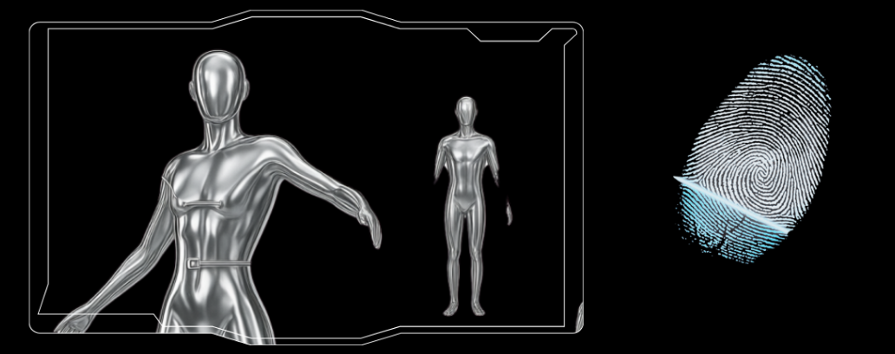
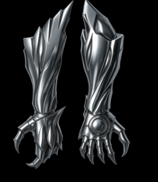
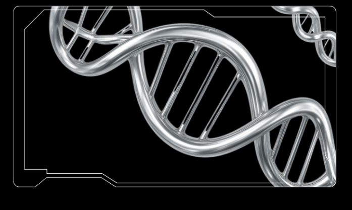
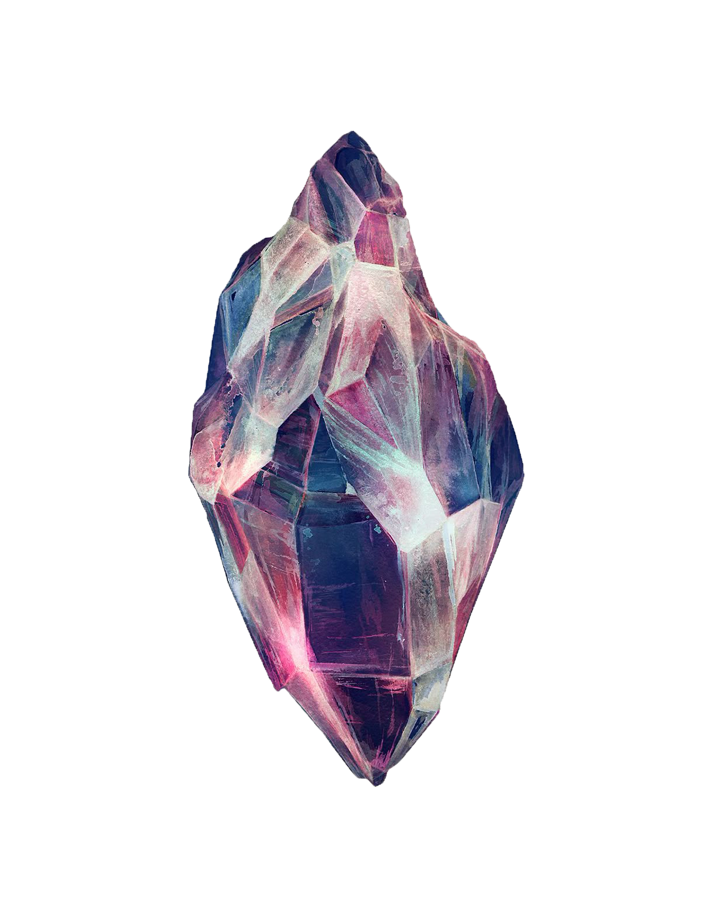

S.E.N.T.R.A NETWORK
International Threat Response System
International Threat Response System



การดำเนินการเชิงยุทธศาสตร์ เพื่อปราบปรามภัยคุกคาม และความผิดปกติอาร์โก้
องค์กรเริ่มก่อตั้งขึ้นเพื่อยับยั้งคดีอาชญากรรม รวมถึงวิจัยแร่เอธ หรือคดีการร้าย ที่เกี่ยวข้องโดยเฉพาะ
ในอดีตมีภูเขาหินยักษ์ ภายหลังถูกเรียกว่า Aethernox Core ผลึกก้อนยักษ์นี้ได้หลับไหลอยู่ในถ้ำลึกโดยไม่ถูกค้นพบมานานนับหลายล้านปี จนเกิดเหตุระเบิดครั้งใหญ่ที่เรียกว่า The Shatterfall ผลึกหินก้อนยักษ์นั้นถูกพลังระเบิดที่รุนแรงกระทบจนแตก กาลเวลาพัดพาเศษผลึกชิ้นเล็กชิ้นน้อยกระจัดกระจายไปทั่วทั้งโลก และทำให้สิ่งมีชีวิตในโลกสูญพันธ์ไปเกือบ 95% โดยนักวิทย์ศาสตร์ต่างก็ตั้งสมุติฐานขึ้นมาต่าง ๆ นา ๆ ว่าสาเหตุที่เกิดการระเบิดนั้นอาจมาอุกาบาต บ้างก็สันนิษฐานว่าเกิดจากการเคลื่อนและการระเบิดของเปลือกโลก
Aethernox Core นั้นมีพลังงานบางอย่างที่สามารถวิวัฒร่างกายสิ่งมีชีวิตให้มีพลังเหนือธรรมชาติในช่วงระยะเวลาหนึ่งได้ โดยรูปแบบของพลังนั้นจะขึ้นอยู่กับลักษณะเฉพาะหรือความรู้สึกนึกคิดของสิ่งมีชีวิตที่ถือครอง จนในยุคที่มนุษย์วิวัฒนาการจนมีสติปัญญา ได้กำเนิดกลุ่มคนที่สามารถหาวิธีใช้พลังนั้นได้อย่างมีประสิทธิภาพมากที่สุด หลังจากนั้นแร่ Aeth จึงกลายเป็นทรัพยากรล้ำค่าและเป็นที่ต้องการของเหล่าประชากรโลกไปโดยปริยาย แต่การ Trigger พลังนั้นได้จำเป็นต้องใช้แรงปนิทานที่แรงกล้าและความเข้ากันได้ดีระหว่างตัวผลึกและผู้ใช้ ไม่เช่นนั้นจะเกิดปฏิกิริยาที่เรียกว่า Oxidation ทำให้เจ้าของร่างเกิดปฏิกิริยา สนิม
มนุษย์เริ่มพัฒนาอุปกรณ์ เพื่อควบคุมและดึงพลังงานดังกล่าว มาใช้ในระบบทางทหารและการวิจัย
